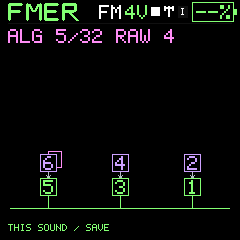
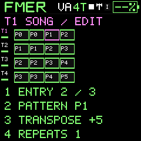
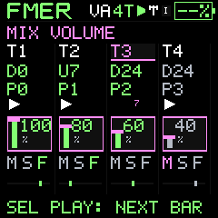

Reference
Definitions
The terms used by the instrument and companion.
- FM / operator / carrier / modulator
- Frequency-modulation-style synthesis uses operators routed so carriers reach output and modulators alter other operators' phase.
- VA
- Virtual analog synthesis: oscillator waveforms shaped by filters and envelopes.
- Envelope / LFO
- A note-triggered trajectory / a repeating modulation source.
- Instrument or patch
- A saved sound definition, including engine and associated settings.
- Working state
- The current editable state, which can differ from a saved slot.
- Pattern / track / project
- A sequence of steps / a playback lane with an instrument reference / the saved arrangement and working state.
- Reference / snapshot
- A pointer to a mutable slot / a retained copy of data at capture time.
- Rest / tie / gate
- Silence / continuation of an earlier note / the sounding fraction of a step.
- Overdub / replace
- Add or change played events while retaining other events / record over the previous content.
- Queue / chain
- A pending pattern change / a cyclic ordering of patterns.
- Mute / solo
- Silence a track / select the tracks allowed through together.
- FX send / return / feedback
- Routing into effects / effect contribution to output / recirculation within an effect.
- Catalog / bank
- A flexible PC collection / a fixed set of numbered instrument destinations.
- Checksum / revision
- A data-integrity digest / a version counter used to prevent stale writes.
- MIDI / audio
- Musical control messages / the actual sound waveform.
- Clock master / external sync
- The timing source / following another device's timing and transport.
- Qualified
- Supported by the recorded checks for a specific build, device and procedure; host success alone is not hardware qualification.


